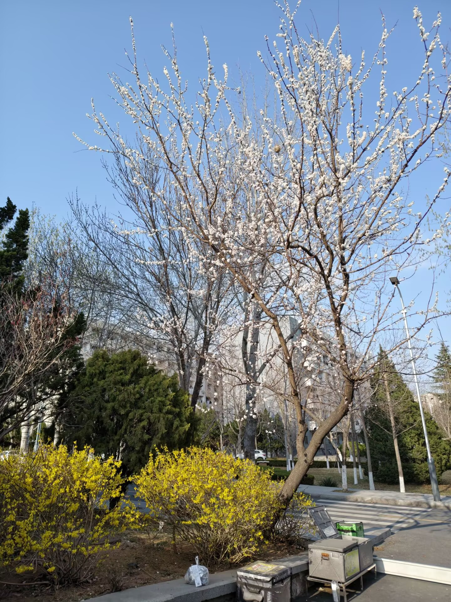

春日的校园，像是被温柔的画笔晕染过的画卷。操场边的樱花树早早地缀上了粉白的花苞，风一吹，细碎的花瓣便打着旋儿落在跑道上，像是给跑道镶了一道浪漫的花边。阳光穿过层层叠叠的新叶，在柏油路上投下斑驳的光影，踩上去像是踩着一地跳动的星光。图书馆前的草坪刚抽出嫩绿色的草芽，带着清晨的露水，在阳光下闪着细碎的光。偶尔有几只麻雀落在草地上，啄食着草籽，又在有人靠近时扑棱棱地飞起，留下一串清脆的鸟鸣。春风带着青草和泥土的气息，裹着远处食堂飘来的饭香，慢悠悠地掠过教学楼的窗沿，把教室里学生们的读书声，也揉进了春日的温柔里。
校园的人工湖边，柳树垂下了柔软的枝条，像是少女垂落的长发，在水面上轻轻拂过，漾开一圈圈细碎的涟漪。湖里的锦鲤在水面下悠闲地游着，偶尔跃出水面，溅起的水珠落在岸边的石阶上，很快又消失不见。湖边的长椅上，坐着捧着书本的学生，阳光落在他们的书页上，也落在他们认真的侧脸，构成了校园里最安静也最动人的风景。春日的校园，没有喧嚣的打扰，只有万物复苏的温柔，和少年人眼里藏不住的光亮。
